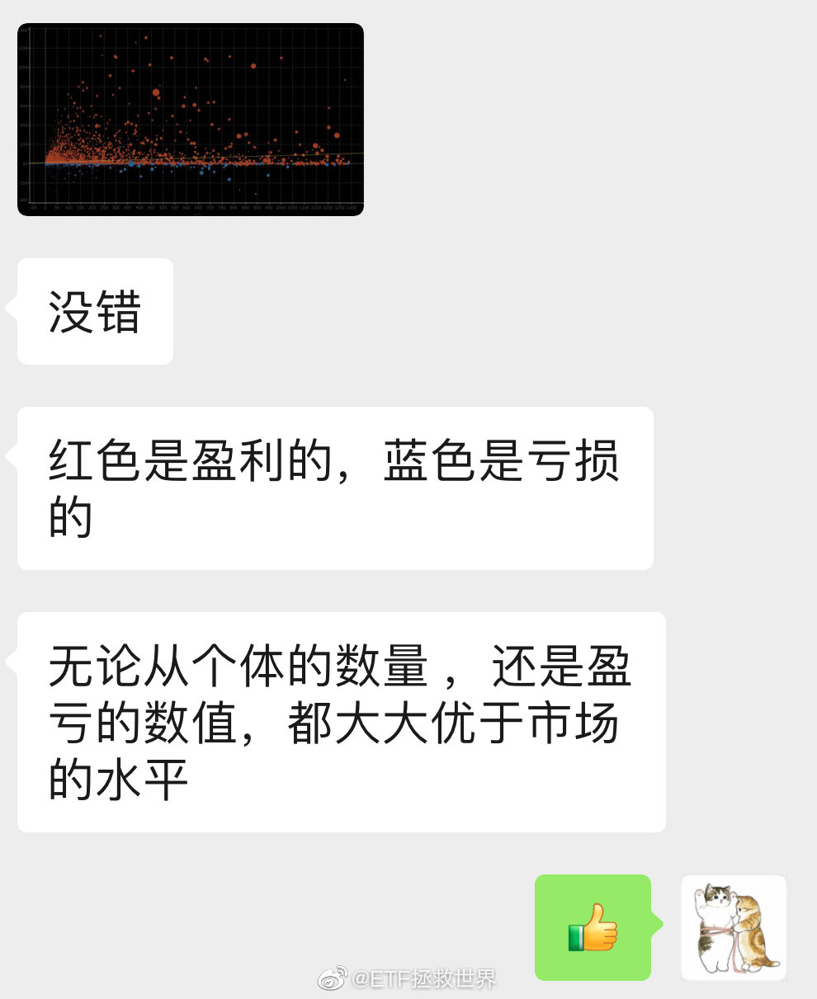
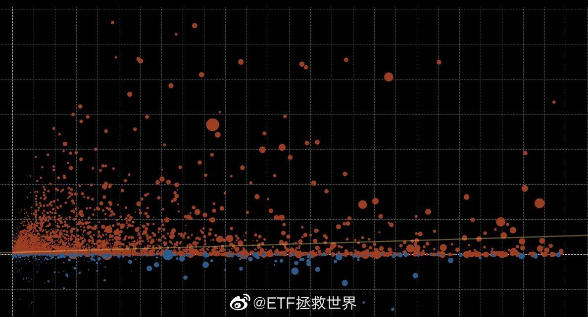

回复@用户k9qd73wkx0:我们的网格基本已经全部卖出，就剩盈利在里面了。妹想到吧，酸不酸？//@用户k9qd73wkx0:回复@ETF拯救世界:现在赢的只是市值，膨胀出来的市值需要更多的钱砸进来，能跑的出去在笑
@ETF拯救世界:
刚才听到一个统计数据，真的非常开心。
我这里过去的智投账户整体看比一般账户好很多很多很多。不仅是网格交易全部盈利，各位自己投资的品种也比一般账户好。
说明各位整体素质要比普通股民强很多。
当然，也有极小一部分朋友亏不少的，基本都是自己买了一些表现很差的股票造成的……
为各位感到高兴和骄傲。我越来越相信只要有足够的理性与合适的策略，每个人都能在A股取得不错的收益。
我这里过去的智投账户整体看比一般账户好很多很多很多。不仅是网格交易全部盈利，各位自己投资的品种也比一般账户好。
说明各位整体素质要比普通股民强很多。
当然，也有极小一部分朋友亏不少的，基本都是自己买了一些表现很差的股票造成的……
为各位感到高兴和骄傲。我越来越相信只要有足够的理性与合适的策略，每个人都能在A股取得不错的收益。
- 
- 